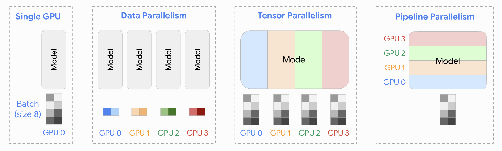

关于LLM Infra的思考和总结
最近刷到一篇有关传统Infra和AI Infra之间联系的知乎文章，目前也在基架岗位实习，结合工作的内容以及自己目前关于LLM推理学习到的一些知识，触发了一些联想。想把这些不成熟的个人想法记录下来，也顺便作为一个学习的总结。
What is Infra
基础架构指的是支撑软件系统正常运行的一整套底层技术和资源，包括计算、存储、网络、操作系统、中间件等等。举一个例子，对于一个社会或者国家的运转，最重要的就是基础建设，包括水利、电力、交通等等方方面面，这些东西支撑着我们日常，可以使我们的生活有保障、出行更加便捷。同样，基础架构在计算机体系里，也充当着这一角色。
无论是传统Infra还是AI Infra，都属于基础架构的范畴。传统的Infra可以包括数据库、分布式系统、存储，继续稍微往业务靠拢一些也可以囊括基础中台。AI Infra则是由于大模型的发展而催生出来的新型基础架构。
Why Infra
我觉得关于为什么需要基础架构可以从两方面来考虑。
- 为什么需要基础架构的存在？
- 为什么要持续的优化基础架构？
试着从第一性原理的角度来考虑一下这两个问题。如果一开始没有基础架构会怎样？
假设现在有两个程序员，程序员A和B。A需要写一个外卖软件，B需要开发一个视频播放软件。那么我们来思考一下，如何从头开始构建这些app。做一个外卖软件，从最底层来说，应该考虑数据应该存放在哪里，怎么放数据，怎么取数据，ok我们需要实现一个这样的抽象；解决了这个问题，我们需要考虑如果一个请求发过来，我们应该怎么根据请求返回对应的数据，比如请求获取当前有哪些外卖可点，我们就应该去利用刚才的抽象，查询得到对应数据再返回，ok我们需要封装一些行为的抽象；接下来，用户和我们的服务器之间怎么实现通信呢？ok我们需要实现一个请求和响应的抽象，解决网络通信问题（这里可以继续递归，怎么确保消息可靠，怎么保证消息一定能到达等等）；进一步，用户这边得到了想要的数据，怎么显示，提供一个让他们有食欲的界面？ok我们需要考虑实现一些好看的样式，定义一些显示的模版，把数据解析（如何解析）呈现。同样，对于程序员B来说，也要考虑类似的问题。
通过上面的例子可以发现，每实现一个app，如果都要从0到1造轮子，那对于程序员来说无疑是巨大的负担，并且这是完全不现实的。人的精力是有限的，这样一个庞杂的体系，基本不可能靠一个人或一个团队来完成，即使做出来，也是一个基本不可用的状态。
当然，现实我们肯定有解决方案。从学习计算机开始，CPU、内存、汇编、编译器、编程语言、数据库、网络、Spring、前端等等，一个非常重要的思想贯穿始终，即封装复杂度，提高复用率。这也是基础架构出现的原因，对于如何存取数据，我们专门凑齐一堆人，封装出一个这样的抽象，为上层提供服务。这也是分而治之思想的体现。这样做的好处就是可以降低复杂度，提高开发速度和降低成本。
那既然有了基础架构，我们为什么要持续优化它？
我觉得根本原因是因为人类这一日益增长的群体产生出的庞大需求导致的。回到刚才的外卖app例子，我们现在找人专门做了一个处理数据读入和写入的封装，并且也实现了工具的复用，但是随之而来的问题就是，如果此时有一万个人同时访问数据，怎么保证能让每个人的体验相同且丝滑？如果仅限于一个很小规模的群体，其实根本不需要在乎什么性能的问题，因为请求压力远远小于计算机处理能力上限。正是因为人数量众多，且每个人请求的次数也众多，相乘起来的总请求量就是天文数字。
在这样的背景下，对基础架构的优化就是重中之重，毕竟体验差对人来说是不可容忍的，毕竟LLM卡住或者找不出来代码的bug我们还要对AI骂上几句。
Traditonal Infra vs AI Infra
正如前言中提到的那篇知乎文章所说，传统Infra和AI Infra从本质上来讲是相通的。这里说的相通并不是说他们业务场景一致，也不是所使用的工具一模一样（传统：Cpp，AI Infra：CUDA、Python、Cpp，当然这只是一个例子），而是底层思路是可迁移的。
毕竟计算机底下无新鲜事，这里总结五个在计算机领域常见的想法：
- 并行：一个worker干的慢？让一堆worker来帮忙；
- 负载均衡：这么多worker就我活多？给别人分点；
- 隐藏延迟，也即latency hiding：烧水要20分钟，收拾床要10分钟，刷牙洗脸5分钟，如何安排任务所花费的时间最短？
- 资源复用：物尽其用；
- 压缩：无损压缩，省时间省空间；有损压缩，牺牲精度换取时间空间；
同时，计算机领域还存在着一个永恒不变的真理：
- 天下没有免费的午餐，任何选择都有好的一面和坏的一面（pros and cons）
因此任何系统进行设计时，都是根据所面向的场景，做最佳的权衡（trade-off）。
传统的Infra解决的是以CPU为中心的计算、存储和通信问题，而当下的AI Infra则解决的是以GPU为中心的计算、存储和通信问题。比如，为了更好利用多核的CPU性能，需要并行编程，而为了更好利用GPU的性能，需要CUDA编程。
下文就当前LLM时代背景下，AI Infra是如何运用上述五个常见的计算机领域的想法的。由于本文主要是整理AI Infra的内容，传统Infra的例子不做过多的探讨，只会在每个部分的开头引入一个例子，来看一下不同场景下相同的思想是如何运用的。
Parallel
在传统Infra的视角下，一个CPU可能会有8、16、32、64等等多个核心，每一个核心都是为了进行通用逻辑计算而设计的。为了能让一个事情完成的更快，很直观的一个想法就是采取多个核心同时做一件事情的分片。例如，在数据库中，可以大致将其划分为计算和存储两个阶段，第一个阶段负责解析sql，第二个阶段负责从存储引擎获取/写入数据。如果一个查询需要的数据量非常大，单个sql查询的时候是线性时间，会产生非常大的延迟。为了解决这个问题，就可以引入并行查询：将一个sql从逻辑上拆分为数个sql片段，每个sql片段当作一个完整的sql发送给存储引擎，存储引擎有多个实例，可以实现并行的处理请求。这就需要在计算层设计一个类似于worker collector的东西，执行的操作抽象来说和all reduce十分类似。
在LLM训练和推理时，也需要使用并行的思想来加速任务。常见的有Data Parallel（DP）、Tensor Parallel（TP）、Pipeline Parallel（PP）、Expert Parallel（EP）等。

Data Parallel
数据并行要做的就是对输入模型的数据分为N个batch，并且把模型的副本放到N个物理GPU上，将这N个batch数据分别发往N个机器上进行训练或者推理。
数据并行需要考虑的问题有调度问题（batch如何拆分，每一个节点上的负载是多少，如何做到更平衡的利用每个节点的算力，防止出现“热”节点等）、通信问题（通信的带宽如果不够很容易成为系统速度的瓶颈，数据如何高效传输是一个很重要的问题）。
Pipline Parallel
Pipeline Parallel其实是模型并行的一种，还有一种是下面的Tensor Parallel，都是为了解决一张卡的显存放不下以及单卡运算效率太慢的一种手段。Transformer是多层Block堆叠而成的一个结构，并且每一层结构都是完全一致的，这样就可以将逻辑上的N层Block，组成G个小组，分别存储在G个物理GPU上，每一个GPU含有N/G层。
这样的做法相当于在模型层面进行层与层之间的解耦，解耦就意味着可以并行的空间（这个思想在PD分离也同样适用，PD分离本文也归为并行的一部分，会在下文进行介绍）。
设想一个这样的场景，比如我们现在想部署Llama2 70B的模型，采用BF16进行推理，因此大概需要2*70=140GB的空间。假设现在有4块GPU，每一块只有40GB的显存，这肯定放不下Llama2 70b，但是4块正正好好可以放下。每一个GPU放大约1/4的模型，M1，M2，M3，M4。这样就可以采用计算机系统中学到的指令并行的思想，time1:M1处理第一个batch，time2:M2处理第一个batch，M1就可以处理第二个batch，以此类推，实现流水线并行。
流水线并行（推理）仍然需要考虑通信开销，即数据传输的通信开销。另外，对于单个GPU上不同batch的数据，还会产生额外的中间结果（比如KV cache），这些中间结果都是需要额外显存来存储的。
Tensor Parallel
如果说流水线并行是对模型的水平拆分（如果把Transformer竖着看），那么Tensor Parallel可以理解对对模型的垂直拆分。这些不同的拆分思想在传统的Infra的并行策略中也十分常见，例如数据库的并行查询本质上是对查询计划的拆分，也会有水平拆分和垂直拆分的两种策略。
对于Multi Head Attention的并行，由于其天生具有多块的特性（多头注意力），因此可以按头来拆分张量，拆分之后的计算并不会影响最终的结果，只需要在计算前将数据做broadcast，完成之后做一个All gather即可。
对于MatMul的操作，可以按列切分和按行切分。如果按列切分，